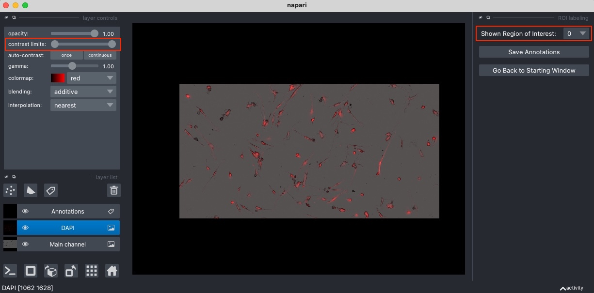
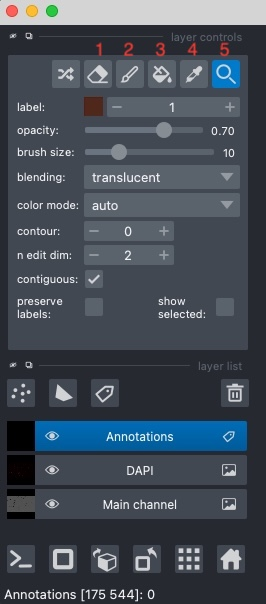

{kind=link}
Annotating in Napari¶
You can start labeling in Napari by clicking on the Label Regions of Interest button in the main window of the annotation tool. A new napari viewer will then open, displaying one region of interest at the time.
Selecting a region of interest: To start annotating, you first select a region of interest by using the drop-down menu in the top-right corner (see image below). Initially, the first region will be displayed.
{kind=link}
Important
Remember that you should label all cells inside a region of interest!
Tip
For making the annotation process easier, it may be helpful to adjust the contrast of some image channel. To do so, first select an image channel (for example the main channel) in the layers list on the left and then adjust the Contrast limits slider on the top-left (see image above).
Note
Annotations are automatically saved when you switch to another region of interest or go back to the starting window. However, you can manually save your annotations at any moment by clicking on the Save Annotations button on the right.
Using Napari annotation tools¶
A complete tutorial explaining all the annotations tools in Napari can be found here. However, in the following you will find a recap of the most important functions and tools.
Napari annotation toolbar¶
{kind=link}
Before to start annotating, make sure that the Annotations layer is selected in the layers list on the left:
Move around and zoom: To move the image or zoom in/out, select the “Lens” tool (button 5 in the image) in the top-left corner toolbar in Napari. You can zoom by scrolling with your mouse/trackpad. Keep in mind that when you have some of the other annotation tools selected, you can zoom or move around in the image by keeping the
SpaceBarkey pressed.Painting tools: Use the paint tool (button 2) to start drawing. You can adjust the brush size by using the slider on the left. If you want to erase or undo something, use the erase tool (button 1). You can also press
Ctrl+Zto undo your last changes. Finally, with the fill tool (button 3) you can pour areas of paint on to the image that expand until it finds a border it cannot flow over.Annotating a new cell: If you want to start labeling a new cell, you should pick a color that was not used before. You can do that by pressing the
Mkey.Updating annotation of an existing cell: If you want to keep labeling an existing cell or update its annotation, you can select its color by using the picker tool (button 4).
Tip
Keep in mind that you can decrease the opacity of the annotation layer if you want to see more of the original image (and increase the transparency of the manual annotations).